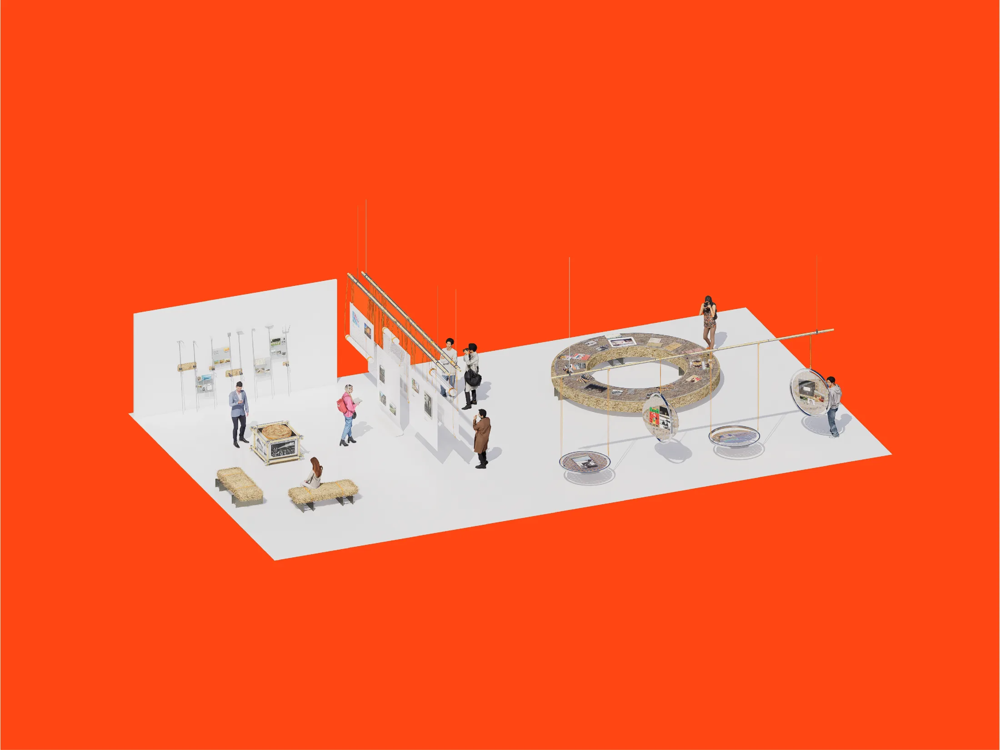

类别 CAT
年代 YEAR
出处 SRC
标签 TAG

晒场，谷物被摊开的空地：暴晒、翻搅、收拢，年复一年。这个词里同时住着「场」——从乡土晒谷场到广场、屏幕与虚拟空间；住着「物」——被晾晒的农耕物产、织物与私人旧物；也住着「人」——劳作者、邻里与暴露在阳光下、记忆与公开之间的个体。
本档案以「晒」为透镜，收录艺术史与大众文化中的一百二十八个案例：绘画、摄影、电影、装置与网络图像。它们被摊在同一片水泥地上，可以被拖动、被翻晒还原色彩、被按年代筛选、被聚拢归类。影子始终指向光的方向——移动鼠标，就是移动太阳。